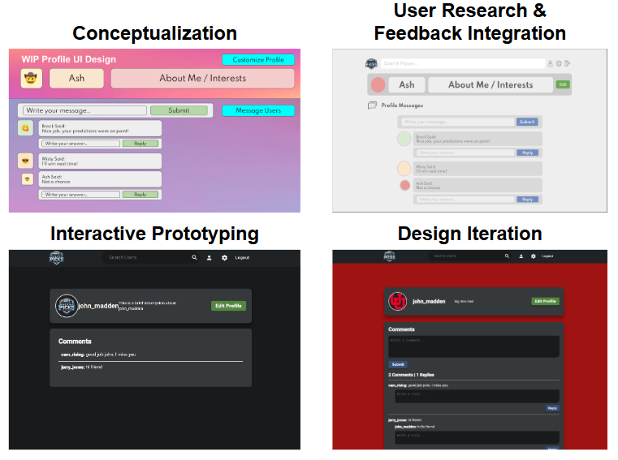
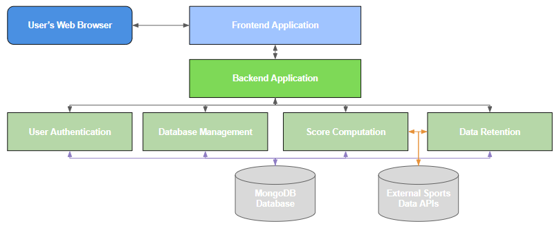
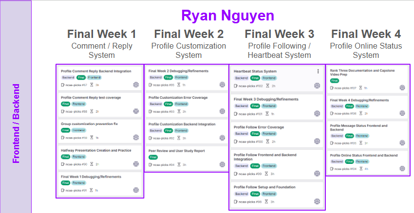

Project Overview | NCAA Picks
The world of sports prediction is often dominated by platforms focused on gambling, leaving little room for fans to enjoy friendly, non-monetary competition. This project aims to fill this gap by developing a full-stack web application where users can form groups and make weekly predictions on college football games. Rather than betting real money, users will compete using a virtual points system, allowing them to showcase their knowledge of the game without the risks associated with gambling.
Project Contribution | Ryan Nguyen
Frontend
- Utilized UX/UI design principles to create a user-friendly, responsive interface
- Utilized backend API endpoints to fetch and display dynamic data from the database on the frontend
- Applied modern CSS techniques for layout, responsiveness, and animations
- Handled client-side form validation and error handling
Backend
- Designed and implemented RESTful API endpoints using Node.js and Express
- Structured backend with scalable architecture (controllers, services, repositories)
- Performed data validation and ensured API consistency for frontend integration
Quality Assurance | Documentation
- Authored clear and comprehensive technical documentation
- Coordinated team workflows and timelines, facilitating communication and task management to keep the project on track
- Conducted user testing to assess usability and verify application stability and performance


